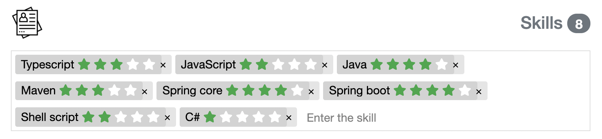

Fitzhi is a solution for measuring and monitoring the technical performance of an IT department, or a service center.
Fitzhi an opensource solution, which aims to be the CTO's cockpit, a tool that puts the technical situation into perspective
and facilitates the management of the activity.
Its installation is trivial. Few additional entries are required. Most indicators are built in using existing tools.
Fitzhì aborde 3 dimensions...
the projects
the skills
the staff

The Patchwork of projects
The patchwork is the technical synthesis, up to date, of the application portfolio.
Each tile represents an application.
- the size figures out the number of lines
- the color, represents the technical evaluation assessed by Fitzhì

The history of the project portfolio from the first commit to the last one.
The color here indicates the staffing risk of each project measured by Fitzhì.


The skills coverage
This diagram represents the teams that are active and capable of maintaining your portfolio ecosystems. Each tile shows the volume and level of risk per skill.
- A "skill tile" of this color is secure: There are enough developers to maintain the projects.
- Conversely, this color signals a lack of developers, a technical desert.
the « skills » capital of the organization
the « skills » capital of the organization
This graph monitors the overall skill level of the IT department on a monthly basis.
Each developer can have 5 seniority levels (★) per skill.
Fitzhì's CTO can be summed up in the banner below: 
Projects
Fitzhi also develops individual dashboards, per project. A badge is provided. It allows you to sum up the situation at a glance.
The code coverage
Operational efficiency is often dependent on team turnover.This diagram (and its associated indicator) presents the hierarchy of the application with regard to the available developers, even those who already know the application and who can ensure its maintenance in operational condition.
You can navigate in the project tree by clicking on the sections of the diagram.
- The green sections are the secure packages, with enough developers.
- The red sections are the deserts. There is no longer anyone on staff to maintain the code.

Here in this example, the addition of the codefactor.io™ platform badge has been configured.